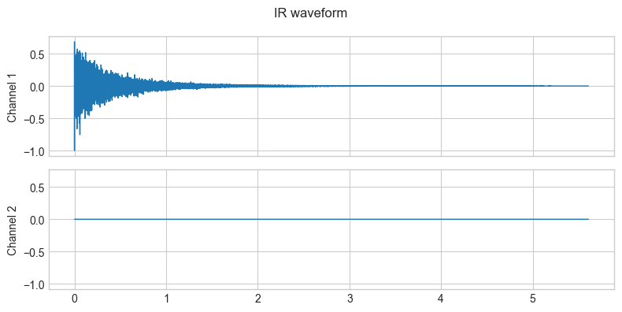
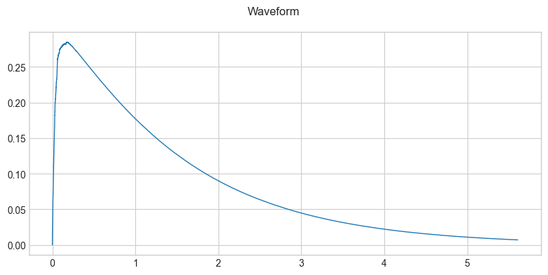
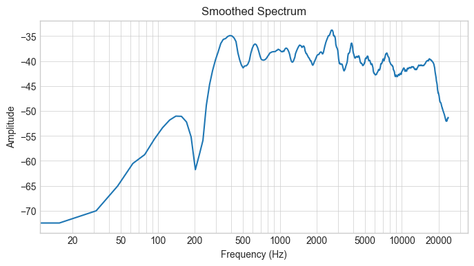

Plot Audio Files Waveforms and Spectrograms with Essentia#
from pathlib import Path
import essentia
import essentia.standard as es
import numpy as np
import matplotlib.pyplot as plt
plt.style.use('seaborn-v0_8-whitegrid')
# plt.rcParams['axes.grid'] = True
cmap = plt.get_cmap('inferno')
def find_files(directory, pattern):
for path in Path(directory).rglob('*'):
if path.is_file() and path.suffix.lower().endswith(pattern):
yield path
def plot_spectrogram(audio):
windowing = es.Windowing(type='blackmanharris62', zeroPadding=2048)
spectrum = es.Spectrum()
melbands = es.MelBands(numberBands=96, lowFrequencyBound=0, highFrequencyBound=11000)
spectrum_logfreq = es.LogSpectrum(binsPerSemitone=1)
amp2db = es.UnaryOperator(type='lin2db', scale=2)
pool = essentia.Pool()
for frame in es.FrameGenerator(audio, frameSize=2048, hopSize=1024):
frame_spectrum = spectrum(windowing(frame))
frame_mel = melbands(frame_spectrum)
frame_spectrum_logfreq, _, _ = spectrum_logfreq(frame_spectrum)
pool.add('spectrum_db', amp2db(frame_spectrum))
pool.add('mel96_db', amp2db(frame_mel))
pool.add('spectrum_logfreq_db', amp2db(frame_spectrum_logfreq))
# Plot all spectrograms.
fig, ((ax1, ax2, ax3)) = plt.subplots(3, 1, sharex=True, sharey=False, figsize=(8, 6))
ax1.set_title("Log-spectrogram (amp2db)")
ax1.set_xlabel("Time (frames)")
ax1.set_ylabel("Frequency bins")
ax1.imshow(pool['spectrum_db'].T, aspect = 'auto', origin='lower', interpolation='none', cmap=cmap)
ax2.set_title("Mel log-spectrogram (amp2db)")
ax2.set_xlabel("Time (frames)")
ax2.set_ylabel("Mel frequency bands")
ax2.imshow(pool['mel96_db'].T, aspect = 'auto', origin='lower', interpolation='none', cmap=cmap)
ax3.set_title("Log-frequency log-spectrogram (amp2db)")
ax3.set_xlabel("Time (frames)")
ax3.set_ylabel("Log-frequency bins")
ax3.imshow(pool['spectrum_logfreq_db'].T, aspect = 'auto', origin='lower', interpolation='none', cmap=cmap)
plt.tight_layout()
plt.show()
def plot_waveform(waveform, sample_rate, title="Waveform", xlim=None, ylim=None):
# waveform.shape -> [num_channels, num_frames]
num_channels, num_frames = waveform.shape
time_axis = np.arange(0, num_frames) / sample_rate
figure, axes = plt.subplots(num_channels, 1, figsize=(8, 4), sharex=True, sharey=True)
if num_channels == 1:
axes = [axes]
for c in range(num_channels):
axes[c].plot(time_axis, waveform[c], linewidth=1)
axes[c].grid(True)
if num_channels > 1:
axes[c].set_ylabel(f'Channel {c+1}')
if xlim:
axes[c].set_xlim(xlim)
if ylim:
axes[c].set_ylim(ylim)
figure.suptitle(title)
plt.tight_layout()
plt.show(block=False)
directory_path = "./audio/"
file_pattern = '.wav'
audio_files = list(find_files(directory_path, file_pattern))
help(es.AudioLoader)
Help on class Algo in module essentia.standard:
class Algo(Algorithm)
| Algo(**kwargs)
|
| AudioLoader
|
|
| Outputs:
|
| [vector_stereosample] audio - the input audio signal
| [real] sampleRate - the sampling rate of the audio signal [Hz]
| [integer] numberChannels - the number of channels
| [string] md5 - the MD5 checksum of raw undecoded audio payload
| [integer] bit_rate - the bit rate of the input audio, as reported by the decoder codec
| [string] codec - the codec that is used to decode the input audio
|
|
| Parameters:
|
| audioStream:
| integer ∈ [0,inf) (default = 0)
| audio stream index to be loaded. Other streams are no taken into account
| (e.g. if stream 0 is video and 1 is audio use index 0 to access it.)
|
| computeMD5:
| bool ∈ {true,false} (default = false)
| compute the MD5 checksum
|
| filename:
| string
| the name of the file from which to read
|
|
| Description:
|
| This algorithm loads the single audio stream contained in a given audio or
| video file. Supported formats are all those supported by the FFmpeg library
| including wav, aiff, flac, ogg and mp3.
|
| This algorithm will throw an exception if it was not properly configured
| which is normally due to not specifying a valid filename. Invalid names
| comprise those with extensions different than the supported formats and non
| existent files. If using this algorithm on Windows, you must ensure that the
| filename is encoded as UTF-8
|
| Note: ogg files are decoded in reverse phase, due to be using ffmpeg library.
|
| References:
| [1] WAV - Wikipedia, the free encyclopedia,
| http://en.wikipedia.org/wiki/Wav
| [2] Audio Interchange File Format - Wikipedia, the free encyclopedia,
| http://en.wikipedia.org/wiki/Aiff
| [3] Free Lossless Audio Codec - Wikipedia, the free encyclopedia,
| http://en.wikipedia.org/wiki/Flac
| [4] Vorbis - Wikipedia, the free encyclopedia,
| http://en.wikipedia.org/wiki/Vorbis
| [5] MP3 - Wikipedia, the free encyclopedia,
| http://en.wikipedia.org/wiki/Mp3
|
| Method resolution order:
| Algo
| Algorithm
| builtins.object
|
| Methods defined here:
|
| __call__(self, *args)
|
| __init__(self, **kwargs)
|
| __str__(self)
|
| compute(self, *args)
|
| configure(self, **kwargs)
|
| ----------------------------------------------------------------------
| Data descriptors defined here:
|
| __dict__
| dictionary for instance variables
|
| __weakref__
| list of weak references to the object
|
| ----------------------------------------------------------------------
| Data and other attributes defined here:
|
| __struct__ = {'category': 'Input/output', 'description': 'This algorit...
|
| ----------------------------------------------------------------------
| Methods inherited from Algorithm:
|
| __compute__(...)
| compute the algorithm
|
| __configure__(...)
| Configure the algorithm
|
| getDoc(...)
| Returns the doc string for the algorithm
|
| getStruct(...)
| Returns the doc struct for the algorithm
|
| inputNames(...)
| Returns the names of the inputs of the algorithm.
|
| inputType(...)
| Returns the type of the input given by its name
|
| name(...)
| Returns the name of the algorithm.
|
| outputNames(...)
| Returns the names of the outputs of the algorithm.
|
| paramType(...)
| Returns the type of the parameter given by its name
|
| paramValue(...)
| Returns the value of the parameter or None if not yet configured
|
| parameterNames(...)
| Returns the names of the parameters for this algorithm.
|
| reset(...)
| Reset the algorithm to its initial state (if any).
|
| ----------------------------------------------------------------------
| Static methods inherited from Algorithm:
|
| __new__(*args, **kwargs) class method of essentia.standard.Algorithm
| Create and return a new object. See help(type) for accurate signature.
audio_path = str(audio_files[0])
audio, sample_rate, _, _, _, _ = es.AudioLoader(filename=audio_path)()
print(audio_path)
metadata = es.MetadataReader(filename=audio_path)()
print(metadata)
print(f'Input dtype: {audio.dtype}, sample rate: {sample_rate}')
print(f'Input shape: {audio.shape}, min:{audio.min():.6f}, max:{audio.max():.6f}, mean:{audio.mean():.6f}')
---------------------------------------------------------------------------
IndexError Traceback (most recent call last)
Cell In[5], line 1
----> 1 audio_path = str(audio_files[0])
2 audio, sample_rate, _, _, _, _ = es.AudioLoader(filename=audio_path)()
3 print(audio_path)
IndexError: list index out of range
plot_waveform(audio.T, sample_rate, title="IR waveform")

plot_spectrogram(audio[:,0])
[ INFO ] TriangularBands: input spectrum size (2049) does not correspond to the "inputSize" parameter (1025). Recomputing the filter bank.
[ INFO ] LogSpectrum: input spectrum size does not match '_frameSize' parameter. Reconfiguring the algorithm.

envelope = es.Envelope()
audio_envelope = envelope(audio[:,0])
audio_envelope = audio_envelope.reshape(1, -1)
plot_waveform(audio_envelope, sample_rate)

Convert Frequency bins to Hz#
Frequency of bin \(i\):
\begin{equation} f(i) = \frac{i * SR} {2 * N (bins)} \end{equation}
where \(SR\) is the sampling rate and \(N\) is the number of bins.
FRAME = int(2 ** 10)
loader = es.MonoLoader(filename=audio_path, sampleRate=sample_rate)
windowing = es.Windowing(type='blackmanharris62', zeroPadding=2048)
spectrum = es.Spectrum()
melbands = es.MelBands(numberBands=96, lowFrequencyBound=0, highFrequencyBound=11000)
spectrum_logfreq = es.LogSpectrum(binsPerSemitone=1)
amp2db = es.UnaryOperator(type='lin2db', scale=2)
pool = essentia.Pool()
audio = loader()
for frame in es.FrameGenerator(audio, frameSize=FRAME, hopSize=256):
frame_spectrum = spectrum(windowing(frame))
frame_mel = melbands(frame_spectrum)
frame_spectrum_logfreq, _, _ = spectrum_logfreq(frame_spectrum)
pool.add('spectrum_db', amp2db(frame_spectrum))
pool.add('mel96_db', amp2db(frame_mel))
pool.add('spectrum_logfreq_db', amp2db(frame_spectrum_logfreq))
num_bins = len(pool['spectrum_db'][0])
y_ticks = np.linspace(1, num_bins-1, 6) # Creates 6 ticks
y_ticklabels = [f"{int(i * sample_rate / (2.0 * num_bins))} Hz" for i in y_ticks]
fig, ((ax1, ax2, ax3)) = plt.subplots(3, 1, sharex=True, sharey=False, figsize=(8, 6))
ax1.set_title("Log-spectrogram (amp2db)")
ax1.set_xlabel("Time (frames)")
ax1.set_ylabel("Frequency Hz")
img1 = ax1.imshow(pool['spectrum_db'].T, aspect = 'auto', origin='lower', interpolation='none', cmap='inferno')
fig.colorbar(img1, ax=ax1, format="%+2.f dB")
ax1.set_yticks(y_ticks)
ax1.set_yticklabels(y_ticklabels)
ax2.set_title("Mel log-spectrogram (amp2db)")
ax2.set_xlabel("Time (frames)")
ax2.set_ylabel("Mel frequency bands")
img2 = ax2.imshow(pool['mel96_db'].T, aspect = 'auto', origin='lower', interpolation='none', cmap='hot')
fig.colorbar(img2, ax=ax2, format="%+2.f dB")
ax3.set_title("Log-frequency log-spectrogram (amp2db)")
ax3.set_xlabel("Time (frames)")
ax3.set_ylabel("Log-frequency bins")
img3 = ax3.imshow(pool['spectrum_logfreq_db'].T, aspect = 'auto', origin='lower', interpolation='none', cmap='coolwarm')
fig.colorbar(img3, ax=ax3, format="%+2.f dB")
plt.tight_layout()
[ INFO ] TriangularBands: input spectrum size (1537) does not correspond to the "inputSize" parameter (1025). Recomputing the filter bank.
[ INFO ] LogSpectrum: input spectrum size does not match '_frameSize' parameter. Reconfiguring the algorithm.
Spectrogram Smoothing#
def nth_octave_smoothing(spectrum, n: int = 3):
N = len(spectrum)
freq_bins = np.linspace(0, int(sample_rate/2), N)
y = np.zeros(shape=np.shape(spectrum), dtype = type(spectrum[0]))
M_1 = len(spectrum) - 1
for k in range(len(spectrum)):
a = int(np.round(k * 2 ** (-1 /(2 * n))))
b = int(np.round(k * 2 ** (1 /(2 * n))))
if a == b:
b += 1
if b > M_1:
b = M_1
y[k] = (1 / ((b-1) - a + 1)) * np.sum(spectrum[a:b])
return y, freq_bins
spectrum_smoothed, freq_bins = nth_octave_smoothing(pool['spectrum_db'][0], n=3)
plt.figure(figsize=(8, 4))
plt.semilogx(freq_bins, spectrum_smoothed)
plt.xlabel('Frequency (Hz)')
plt.ylabel('Amplitude')
plt.title('Smoothed Spectrum')
# Set x-ticks at standard frequencies
standard_freqs = [20, 50, 100, 200, 500, 1000, 2000, 5000, 10000, 20000]
plt.xticks(standard_freqs, standard_freqs)
plt.grid(True, which='both', linestyle='-', linewidth=0.5)
plt.show()
